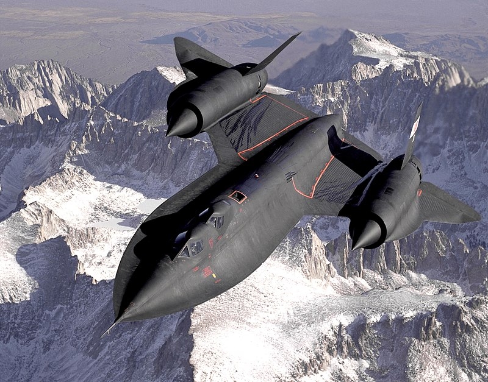

Lockheed SR-71 (SR от англ. strategic reconnaissance aircraft — стратегический разведывательный самолёт) — стратегический сверхзвуковой самолёт-разведчик ВВС США. Неофициально был назван «Blackbird» (с англ. — «Чёрный дрозд», «Чёрная птица»).
Особенностями данного самолёта являются высокая скорость и высота полёта, благодаря которым основным манёвром уклонения от ракет было ускорение и набор высоты. Выведен из эксплуатации в 1998 году. По состоянию на 2022 год является самым быстрым реактивным самолетом в мире